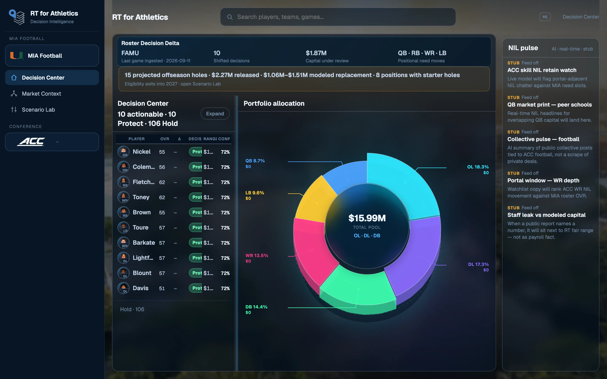

Insights
What Decision Center actually shows
Protect, reprice, review — and why the queue is a decision object, not a leaderboard.

Most roster tools show you a table and call it intelligence. Decision Center is built the other way: every name already has a recommended action, a modeled capital range, and a confidence score. The job of the screen is to tell staff who needs a conversation this week.
A queue, not a ranking
Protect, reprice, and review sit above hold. That is intentional. The interesting work is the subset of the roster where capital and performance are out of line — not the 85-man dump sorted by stars.
Capital in the same frame
The cockpit pairs that queue with how the football pool is actually allocated. If a position is overweight relative to output, or a starter’s range has moved since the last ingested game, it shows up as a decision — not a footnote in a PDF.
The same surface, every home
This note uses one program view as an example. The product opens the same Decision Center for every home. Example imagery is not a claim of a customer, partnership, deployment, or endorsement.
Want this queue on your roster? Walkthroughs are scheduled.
Request a walkthrough